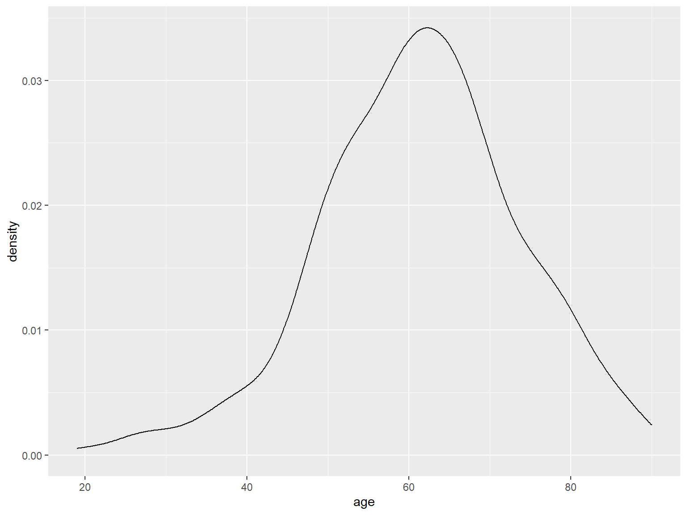

Ablauf - Tag 2
- Datentransformation mit
dplyr - Datenvisualisierung mit
ggplot2

Andreas Mock
12.05.2020
dplyrggplot2

## [1] "G3" "G2" "G2" "G2" "G2" "G1"## [1] G3 G2 G2 G2 G2 G1
## Levels: G1 G2 G3 G4 GX## [1] "tbl_df" "tbl" "data.frame"Der hnscc Datensatz ist eigentlich streng genommen kein Dataframe, sondern ein sogenannter Tibble, die moderne Weiterentwicklung eines R Dataframes.
## # A tibble: 279 x 11
## id age alcohol days_to_death gender neoplasm_site grade pack_years
## <chr> <int> <chr> <int> <chr> <chr> <chr> <dbl>
## 1 TCGA~ 69 YES 461 MALE Oral Tongue G3 51
## 2 TCGA~ 39 YES 415 MALE Larynx G2 30
## 3 TCGA~ 45 YES 1134 FEMALE Base of Tong~ G2 30
## 4 TCGA~ 83 NO 276 MALE Larynx G2 75
## 5 TCGA~ 47 YES 248 MALE Floor of Mou~ G2 60
## 6 TCGA~ 72 YES 190 MALE Buccal Mucosa G1 20
## 7 TCGA~ 56 YES 845 MALE Alveolar Rid~ G2 NA
## 8 TCGA~ 51 YES 1761 MALE Tonsil G2 NA
## 9 TCGA~ 54 YES 186 MALE Larynx G2 62
## 10 TCGA~ 58 YES 179 FEMALE Floor of Mou~ G3 60
## # ... with 269 more rows, and 3 more variables: tabacco_group <chr>,
## # tumor_stage <chr>, vital_status <chr>Im Vergleich dazu der Output eines “normalen” Dataframes. In Übung 3 werdet ihr die Unterschiede herausarbeiten.
## id age alcohol days_to_death gender neoplasm_site grade pack_years
## 1 TCGA-BA-4074 69 YES 461 MALE Oral Tongue G3 51
## 2 TCGA-BA-4076 39 YES 415 MALE Larynx G2 30
## 3 TCGA-BA-4077 45 YES 1134 FEMALE Base of Tongue G2 30
## 4 TCGA-BA-4078 83 NO 276 MALE Larynx G2 75
## 5 TCGA-BA-5149 47 YES 248 MALE Floor of Mouth G2 60
## 6 TCGA-BA-5151 72 YES 190 MALE Buccal Mucosa G1 20
## tabacco_group tumor_stage vital_status
## 1 Current smoker Stage IVA DECEASED
## 2 Current smoker <NA> DECEASED
## 3 Current reformed smoker for < or = 15 years Stage IVA DECEASED
## 4 Current reformed smoker for < or = 15 years <NA> DECEASED
## 5 Current smoker Stage IVA LIVING
## 6 Current reformed smoker for > 15 years Stage IVA LIVINGdplyrHNSCC Datensatz laden.
Warum Datentransformation? Oftmals sind wir nur an Teilmengen eines Datensatzes interessiert, bzw. möchten Proben nach verschiedenen Merkmalen zusammengruppieren.
Die Funktionen zur Datentransformation sind innerhalb des “Tidyverse” im dplyr Paket zu finden. Habt ihr das tidyverse Paket geladen, so wird automatisch auch das dplyr Paket geladen.
dplyr - eine Übersicht| Transformation | Funktion |
|---|---|
| Zeilen filtern | filter() |
| Zeilen sortieren | arrange() |
| Spalten selektieren | select() |
| Spaltennamen umbenennen | rename() |
| Neue Spalten hinzufügen | mutate() |
| Gruppenweise transformieren | group_by() & summarize() |
| Transformationen kombinieren | pipe Funktion %>% |
filter()Die Funktion filter() ermöglicht es uns ein Subset aus den Zeilen auszuwählen. Das erste Argument ist das Objekt, die weiteren Argumente sind die Spalten, wonach wir filtern möchten.
## # A tibble: 42 x 11
## id age alcohol days_to_death gender neoplasm_site grade pack_years
## <chr> <int> <chr> <int> <chr> <chr> <chr> <dbl>
## 1 TCGA~ 39 YES 415 MALE Larynx G2 30
## 2 TCGA~ 45 YES 1134 FEMALE Base of Tong~ G2 30
## 3 TCGA~ 47 YES 248 MALE Floor of Mou~ G2 60
## 4 TCGA~ 41 YES 242 FEMALE Oral Tongue G2 NA
## 5 TCGA~ 47 YES 395 MALE Floor of Mou~ G2 40
## 6 TCGA~ 28 YES 113 MALE Oral Tongue G2 1
## 7 TCGA~ 48 NO 2891 MALE Tonsil G3 NA
## 8 TCGA~ 19 NO 240 MALE Oral Tongue G2 NA
## 9 TCGA~ 48 YES 397 FEMALE Oral Tongue G3 20
## 10 TCGA~ 48 YES 252 MALE Larynx G3 15
## # ... with 32 more rows, and 3 more variables: tabacco_group <chr>,
## # tumor_stage <chr>, vital_status <chr>## # A tibble: 72 x 11
## id age alcohol days_to_death gender neoplasm_site grade pack_years
## <chr> <int> <chr> <int> <chr> <chr> <chr> <dbl>
## 1 TCGA~ 39 YES 415 MALE Larynx G2 30
## 2 TCGA~ 83 NO 276 MALE Larynx G2 75
## 3 TCGA~ 54 YES 186 MALE Larynx G2 62
## 4 TCGA~ 53 YES 152 MALE Larynx G2 60
## 5 TCGA~ 62 YES 244 MALE Larynx G2 46
## 6 TCGA~ 60 YES 450 FEMALE Larynx G2 40
## 7 TCGA~ 68 YES 186 MALE Larynx G3 60
## 8 TCGA~ 67 YES 412 MALE Larynx G2 NA
## 9 TCGA~ 56 YES 194 MALE Larynx G2 80
## 10 TCGA~ 52 YES 369 MALE Larynx G3 120
## # ... with 62 more rows, and 3 more variables: tabacco_group <chr>,
## # tumor_stage <chr>, vital_status <chr>Logische Operatoren
Die doppelten Gleichheitszeichen entsprechen der Frage: Ist der Eintrag in neoplasm_site = "Larynx". Das Resultat der Frage ist ein Vektor mit den Informationen TRUE oder FALSE pro Eintrag eines Vektors.
##
## FALSE TRUE
## 207 72Die Notation um alle Sites außer Larynx zu filtern ist, ein Ausrufezeichen vor den Ausdruck zu setzen:
Mehrere Sites können wie folgt ausgewählt werden:
Im Filterprozess können Informationen aus beliebig vielen Spalten miteinander kombiniert werden.
## # A tibble: 8 x 11
## id age alcohol days_to_death gender neoplasm_site grade pack_years
## <chr> <int> <chr> <int> <chr> <chr> <chr> <dbl>
## 1 TCGA~ 39 YES 415 MALE Larynx G2 30
## 2 TCGA~ 48 YES 252 MALE Larynx G3 15
## 3 TCGA~ 49 <NA> 201 MALE Larynx G3 NA
## 4 TCGA~ 47 YES 42 MALE Larynx G3 40
## 5 TCGA~ 45 NO 93 FEMALE Larynx G2 60
## 6 TCGA~ 49 NO 600 MALE Larynx G3 16
## 7 TCGA~ 38 NO 669 MALE Larynx GX 21
## 8 TCGA~ 47 YES 35 MALE Larynx G2 20
## # ... with 3 more variables: tabacco_group <chr>, tumor_stage <chr>,
## # vital_status <chr>arrange()Die Funktion arrange() sortiert Zeilen nach Spalteninformationen.
## # A tibble: 279 x 11
## id age alcohol days_to_death gender neoplasm_site grade pack_years
## <chr> <int> <chr> <int> <chr> <chr> <chr> <dbl>
## 1 TCGA~ 72 YES 190 MALE Buccal Mucosa G1 20
## 2 TCGA~ 65 YES 1635 MALE Hard Palate G1 NA
## 3 TCGA~ 61 YES 236 MALE Oral Tongue G1 46
## 4 TCGA~ 55 YES 413 FEMALE Floor of Mou~ G1 60
## 5 TCGA~ 52 YES 1440 MALE Oral Cavity G1 45
## 6 TCGA~ 45 YES 759 MALE Oral Tongue G1 NA
## 7 TCGA~ 69 YES 1430 MALE Oral Cavity G1 54
## 8 TCGA~ 36 YES 913 FEMALE Oral Tongue G1 NA
## 9 TCGA~ 67 NO 946 FEMALE Oral Tongue G1 30
## 10 TCGA~ 62 NO 743 MALE Oral Tongue G1 NA
## # ... with 269 more rows, and 3 more variables: tabacco_group <chr>,
## # tumor_stage <chr>, vital_status <chr>Hierbei kann wie auch beim Filtern eine Sortierung in mehreren Schritten erfolgen.
## # A tibble: 279 x 11
## id age alcohol days_to_death gender neoplasm_site grade pack_years
## <chr> <int> <chr> <int> <chr> <chr> <chr> <dbl>
## 1 TCGA~ 19 NO 240 MALE Oral Tongue G2 NA
## 2 TCGA~ 26 YES 908 MALE Oral Tongue G2 NA
## 3 TCGA~ 26 YES 1315 MALE Oral Tongue G2 NA
## 4 TCGA~ 28 YES 113 MALE Oral Tongue G2 1
## 5 TCGA~ 29 <NA> 761 FEMALE Oral Tongue GX NA
## 6 TCGA~ 32 YES 64 FEMALE Oral Tongue G2 NA
## 7 TCGA~ 34 YES 327 MALE Oral Tongue G2 NA
## 8 TCGA~ 35 YES 1152 FEMALE Tonsil GX NA
## 9 TCGA~ 36 YES 913 FEMALE Oral Tongue G1 NA
## 10 TCGA~ 38 YES 351 MALE Tonsil G2 26
## # ... with 269 more rows, and 3 more variables: tabacco_group <chr>,
## # tumor_stage <chr>, vital_status <chr>select()## # A tibble: 279 x 2
## days_to_death vital_status
## <int> <chr>
## 1 461 DECEASED
## 2 415 DECEASED
## 3 1134 DECEASED
## 4 276 DECEASED
## 5 248 LIVING
## 6 190 LIVING
## 7 845 LIVING
## 8 1761 DECEASED
## 9 186 LIVING
## 10 179 LIVING
## # ... with 269 more rowsUmgekehrt können auch Spalten ausgeschlossen werden
## # A tibble: 279 x 9
## alcohol days_to_death gender neoplasm_site grade pack_years tabacco_group
## <chr> <int> <chr> <chr> <chr> <dbl> <chr>
## 1 YES 461 MALE Oral Tongue G3 51 Current smok~
## 2 YES 415 MALE Larynx G2 30 Current smok~
## 3 YES 1134 FEMALE Base of Tong~ G2 30 Current refo~
## 4 NO 276 MALE Larynx G2 75 Current refo~
## 5 YES 248 MALE Floor of Mou~ G2 60 Current smok~
## 6 YES 190 MALE Buccal Mucosa G1 20 Current refo~
## 7 YES 845 MALE Alveolar Rid~ G2 NA Lifelong Non~
## 8 YES 1761 MALE Tonsil G2 NA Lifelong Non~
## 9 YES 186 MALE Larynx G2 62 Current refo~
## 10 YES 179 FEMALE Floor of Mou~ G3 60 Current refo~
## # ... with 269 more rows, and 2 more variables: tumor_stage <chr>,
## # vital_status <chr>rename()## # A tibble: 279 x 11
## barcode age alcohol days_to_death gender neoplasm_site grade pack_years
## <chr> <int> <chr> <int> <chr> <chr> <chr> <dbl>
## 1 TCGA-B~ 69 YES 461 MALE Oral Tongue G3 51
## 2 TCGA-B~ 39 YES 415 MALE Larynx G2 30
## 3 TCGA-B~ 45 YES 1134 FEMALE Base of Tong~ G2 30
## 4 TCGA-B~ 83 NO 276 MALE Larynx G2 75
## 5 TCGA-B~ 47 YES 248 MALE Floor of Mou~ G2 60
## 6 TCGA-B~ 72 YES 190 MALE Buccal Mucosa G1 20
## 7 TCGA-B~ 56 YES 845 MALE Alveolar Rid~ G2 NA
## 8 TCGA-B~ 51 YES 1761 MALE Tonsil G2 NA
## 9 TCGA-B~ 54 YES 186 MALE Larynx G2 62
## 10 TCGA-B~ 58 YES 179 FEMALE Floor of Mou~ G3 60
## # ... with 269 more rows, and 3 more variables: tabacco_group <chr>,
## # tumor_stage <chr>, vital_status <chr>mutate()## Min. 1st Qu. Median Mean 3rd Qu. Max. NA's
## 0.0000 0.5993 1.2137 2.1615 2.7377 17.5781 1group_by() und summarize()## `summarise()` ungrouping output (override with `.groups` argument)## # A tibble: 12 x 2
## neoplasm_site mean_age
## <chr> <dbl>
## 1 Alveolar Ridge 67.7
## 2 Base of Tongue 61.7
## 3 Buccal Mucosa 70.6
## 4 Floor of Mouth 63.4
## 5 Hard Palate 76.4
## 6 Hypopharynx 59.5
## 7 Larynx 61.1
## 8 Lip 69
## 9 Oral Cavity 66.5
## 10 Oral Tongue 56.9
## 11 Oropharynx 55.5
## 12 Tonsil 53.5%>%hnscc %>%
filter(!neoplasm_site %in% c("Base of Tongue","Oral Tongue")) %>%
group_by(neoplasm_site) %>%
summarize(count=n(),
mean_age=mean(age))## `summarise()` ungrouping output (override with `.groups` argument)## # A tibble: 10 x 3
## neoplasm_site count mean_age
## <chr> <int> <dbl>
## 1 Alveolar Ridge 7 67.7
## 2 Buccal Mucosa 8 70.6
## 3 Floor of Mouth 26 63.4
## 4 Hard Palate 5 76.4
## 5 Hypopharynx 2 59.5
## 6 Larynx 72 61.1
## 7 Lip 1 69
## 8 Oral Cavity 49 66.5
## 9 Oropharynx 2 55.5
## 10 Tonsil 19 53.5Funktionsweise der ggplot Funktion
Leere Leinwand. age auf der x-Achse und days_to_death auf der y-Achse.
Mit den sogenannten Aesthetics aes definieren wir die Dimensionen an Informationen, die wir im Plot darstellen möchten.
Dieser leeren Leinwand werden nun sogenannte geoms hinzugefügt, z.B. geom_point für einen Dotplot.
Dotplot
## Warning: Removed 1 rows containing missing values (geom_point).
Boxplot
## Warning: Removed 125 rows containing non-finite values (stat_boxplot).Histogramm
## `stat_bin()` using `bins = 30`. Pick better value with `binwidth`.Density plot

hnscc %>%
group_by(neoplasm_site) %>%
summarize(mean_age=mean(age)) %>%
ggplot(aes(x=reorder(neoplasm_site,mean_age),y=mean_age)) +
geom_bar(stat="identity") +
coord_flip() +
xlab("anatomical site") +
ylab("mean age")## `summarise()` ungrouping output (override with `.groups` argument)Bisher haben wir als aesthetics nur die x- und y-Achse verwendet. ggplot2 bietet jedoch noch weitere Dimensionen von Daten als aesthetics zu definieren
Aesthetic - color
Coloring - kategoriale Variable neoplasm site.
ggplot(hnscc, aes(x=age, y=days_to_death, color=neoplasm_site)) +
geom_point() +
guides(color=guide_legend(ncol=2))## Warning: Removed 1 rows containing missing values (geom_point).Coloring - numerische Variable packyears.
## Warning: Removed 1 rows containing missing values (geom_point).Aesthetic - size
## Warning: Removed 126 rows containing missing values (geom_point).Aesthetic - shape
## Warning: Removed 1 rows containing missing values (geom_point).
Über die Aesthetics hinaus gibt es die Möglichkeit Plots nach kategorialen Variablen zu stratefizieren.
ggplot(hnscc, aes(x=age, y=days_to_death, color=neoplasm_site)) +
geom_point() +
facet_wrap(~alcohol) +
guides(color=guide_legend(ncol=2))## Warning: Removed 1 rows containing missing values (geom_point).Datentransformation mit dplyr
Link: http://r4ds.had.co.nz/transform.html
Datenvisualisierung mit ggplot2
Link: http://r4ds.had.co.nz/data-visualisation.html